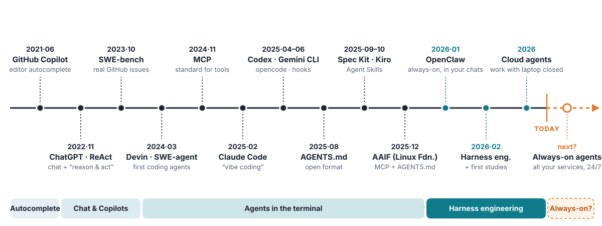
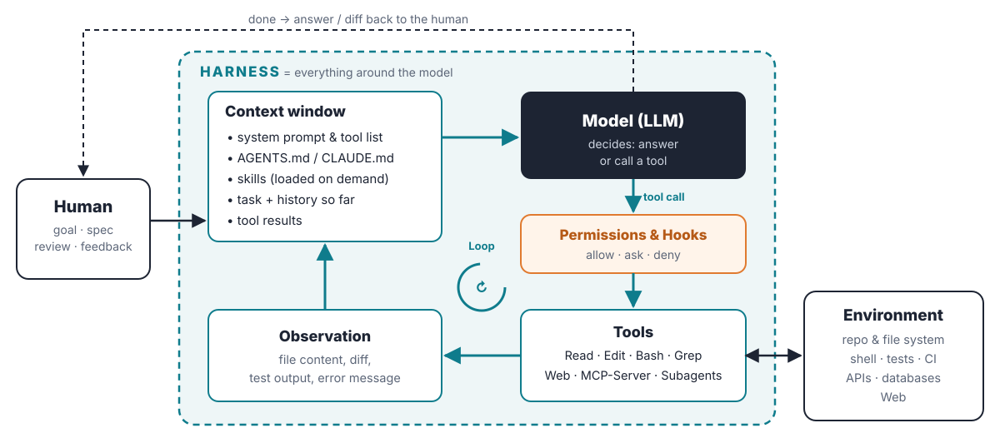

What really matters – and what has lost its weight
CorrelCon 2026 · Karlsruhe · November 14, 2026
Model (LLM)
Predicts the next token. Can’t execute anything – it only writes text, including tool calls.
Tool
A function the model may call.
read · edit · bash · web search
Agentic loop
Model → tool call → result back into context → next step … until done.
Agent
Model + loop + tools + a goal. Works autonomously over many steps.
Harness
The software around the model: loop, tools, context, permissions, hooks, UI.
Claude Code · Codex · opencode · Vibe
Context
Everything the model sees in one step. Limited, costs tokens, crowds out the rest.
AGENTS.md
Project file the harness always loads into context: commands, conventions, rules.
CLAUDE.md · GEMINI.md
Skill
Folder with instructions (+ scripts), loaded only when needed.
MCP
Model Context Protocol – open standard to plug in external tools and data.
Hook
Deterministic script the harness runs on events, e.g. before every tool call.

From author to reviewer
I write the goal and the constraints, the agent writes the code. My main job: make the task clear, check the result.
Non-deterministic
Same task, different path. Token usage for the very same task varies by up to 30× (Bai et al. 2026).
Context instead of memory
The agent only knows the project as far as it is in the context – every session starts from zero.
Felt ≠ measured
METR (2025): experienced OSS developers felt 20 % faster – but were 19 % slower with AI.

| Harness | Vendor | License | Models | Customise via |
|---|---|---|---|---|
| Claude Code | Anthropic | proprietary | Claude | CLAUDE.md, skills, hooks, plugins, Agent SDK |
| Codex CLI | OpenAI | Apache-2.0 | OpenAI (+ configurable providers) | AGENTS.md, skills, MCP |
| Gemini CLI | Apache-2.0 | Gemini | GEMINI.md, extensions, MCP | |
| opencode | community | MIT | 75+ providers, incl. EU hosting & local | AGENTS.md, agents, plugins, MCP |
| Mistral Vibe | Mistral (FR) | open source | Devstral / Mistral | agent profiles, permissions, MCP |
| Build your own | you | – | any | agent SDKs or ~100 lines of your own loop |
Criteria: Where does my data go (GDPR!)? · Am I locked into one model vendor? · How customisable is it? · What does the team use? · Cost per task
AGENTS.md
## Commands
- Setup: `uv sync`
- Tests: `uv run pytest -q`
- Lint: `uv run ruff check --fix`
## Conventions you can't see in the code
- Never write to `data/raw/`
- New analyses: Quarto files in `reports/`
- Column names always snake_case
## Definition of done
- Tests green, ruff clean
- No new dependencies without askingPut in
Leave out
/init)Permissions = what the agent may do: allow · ask · deny
Hooks = what always happens – deterministic, not “please remember” in AGENTS.md
Careful: denying Read(.env) doesn’t stop cat .env via the shell. Real security only with a sandbox / container and secrets outside the repo.
AGENTS.md (ETH Zurich, ICLR 2026)
4 agents, SWE-bench Lite + 138 tasks from repos with real context files
SkillsBench (Feb 2026)
84 tasks, 11 domains, 7 model–harness combinations
Takeaway: Knowledge the model already has adds nothing – but costs tokens. Value comes only from real specialist knowledge that is short and human-curated. More tokens ≠ more accuracy (Bai et al. 2026).
skill-placebo (Sep 2026)
9 popular skills vs. neutral text of the same length, loaded the same way. Claude Code + Opus 5.5, 15 tasks, 30 trials per arm, pre-registered.
Claims vs. measured
| Skill | Claimed | Measured |
|---|---|---|
| caveman | 65 % fewer tokens | +18 % total tokens, +14 % cost |
| ponytail | ~20 % cheaper | –1 % cost |
| planning-with-files | 96.7 % pass rate | 80 % vs. 87 % without skill |
Caveats: one model and harness, short public tasks near the ceiling, long-session skills not covered. A single-author benchmark, not peer-reviewed – but all trials are published.
Losing weight
Gaining weight
1 · Spec
What and why: goal, acceptance criteria, non-goals. Written / reviewed by a human.
2 · Plan & tasks
The agent proposes an implementation (plan mode), the human corrects it before any code exists.
3 · Implement & verify
The agent implements task by task; tests derived from the acceptance criteria are the yardstick.
SPEC.md + plan modeData protection
Data about vulnerable people – US providers often off-limits.
~50 % of AI-using nonprofits name privacy risks¹
Expertise
No in-house tech staff, no rules → “shadow AI”.
41 % lack in-house tech expertise¹ · 76 % have no AI strategy²
Money
Tokens and tools compete with the mission.
69 %: budget is the main obstacle³ · 60 % no support for digital costs³
Who maintains it?
Volunteers move on – non-techies inherit the code.
78 % of organisations (Bavaria) have no paid staff⁴
Our setup: EU-hosted open models · guardrails · pay-per-use (~€40/workshop)
¹ Fast Forward 2025 (US) · ² TechSoup 2025 (US) · ³ Charity Digital Skills 2025 (UK) · ⁴ ZiviZ 2023
1 · You prompt
Ready prompts per pipeline step: prepare → spam → topics → classify → report.
OpenCode 2 · uv run agent
2 · Agent writes code
Qwen3-Coder-Next writes and tests the code – never sees raw data, never runs the pipeline.
IONOS, Germany · €0.15 / 1M input tokens
3 · Code asks a model
Your code sends batches of comments to gpt-oss-120b; you run it and review the results.
same provider, same key · cents per run
Instructions
AGENTS.md: rules, commands, quiet output, data protection
Policies & hooks
Only IONOS · no .env, no raw data · keys hidden · prompts read-only · ruff after every edit
Cost
~55k tokens per agent step ≈ €0.01 → ~€40 for 20 people
Placeholder – to be worked out together. Possible guiding questions:
Placeholder – Benjamin’s company projects. Suggested structure:
Coding Agents and Best Practices · CorrelCon 2026 Karlsruhe · Nov 14, 2026